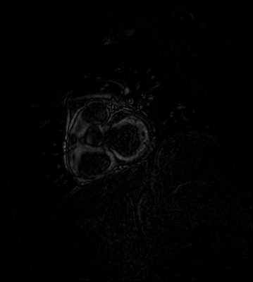
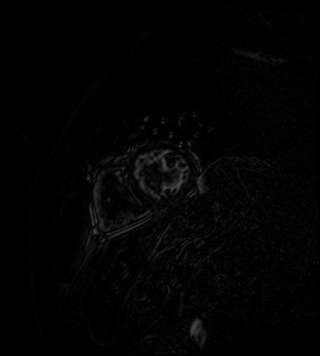
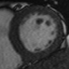

Stanford CS231n Project
This is a compilization of the visually interesting portion of the work did for CS231n that could not fit into the paper.
Exploration of the folder structure
The interactive d3.js graph above is best viewed with Chrome, as in it's probably nothing but buttons on other browsers.
slices
dcm files
Overview of data


Handling irregularities

Our first inclination was to just crop all of them to be square using the shorter side and then resizing them to be the same size. While this worked well for some, it didn't for others whose centroid (the region with the most relevant info) were not centered.
Localizing centroid
 Experimented with kmeans and Hough transforms for circle detection, but didn't perform well.
Experimented with kmeans and Hough transforms for circle detection, but didn't perform well.
Using deltas

 We decided to look at the deltas for localization and it seemed to work well.
Timeseries deltas across sample slices shown in this row for Study 1.
We decided to look at the deltas for localization and it seemed to work well.
Timeseries deltas across sample slices shown in this row for Study 1.

Localization results with slices (top) and deltas (bottom)



Constrast fix
Some of the images differed greatly in pixel range, with many that were so dark it was difficult to see the LV. Thus, we used histogram equalization on the original dcms and deltas after cropping with mean deltas.